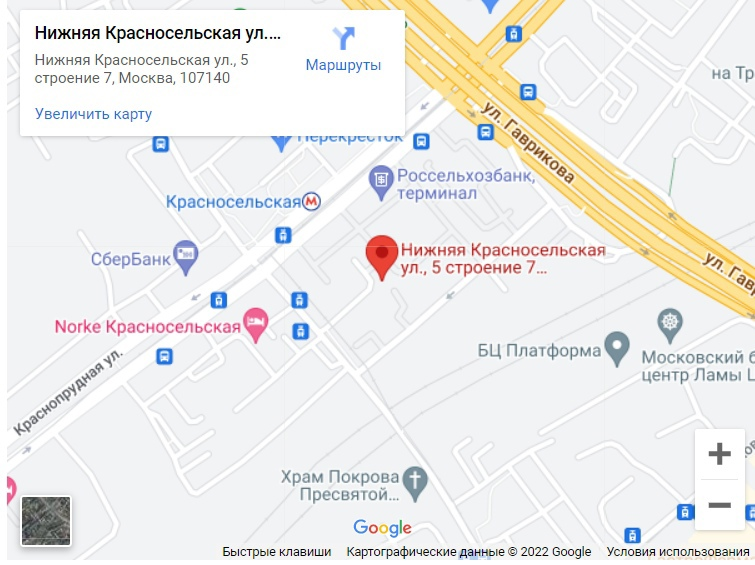

По вопросам приёма граждан, а также представителей организаций, общественных объединений, государственных органов,
органов местного самоуправления обращаться к советнику отдела организационно-правовой работы аппарата
СД МО Красносельский Шульгиной Веронике Евгеньевне по телефону: +7 (499) 264-86-80.
Прием граждан: понедельник, вторник с 18:00 час. до 20:00 час.
Предварительная запись по телефону: +7 (499) 264-86-80
Совет депутатов муниципального округа Красносельский находится по адресу:
107140, г. Москва, ул. Нижняя Красносельская, дом 5, строение 7
Время работы: понедельник–пятница: с 10:30 час. до 18:30 час.
Выходные дни: суббота и воскресенье
